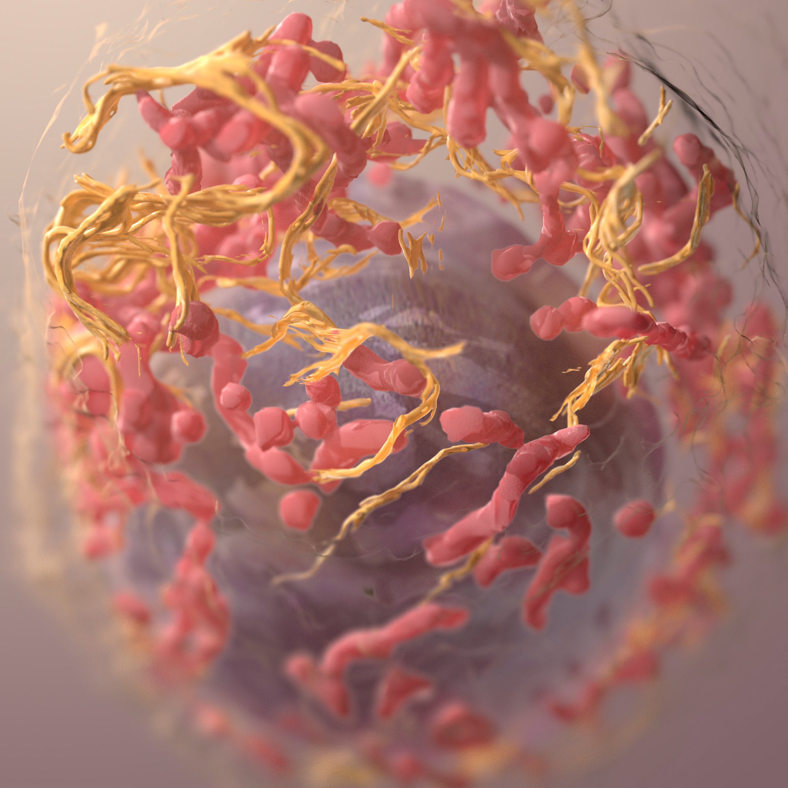
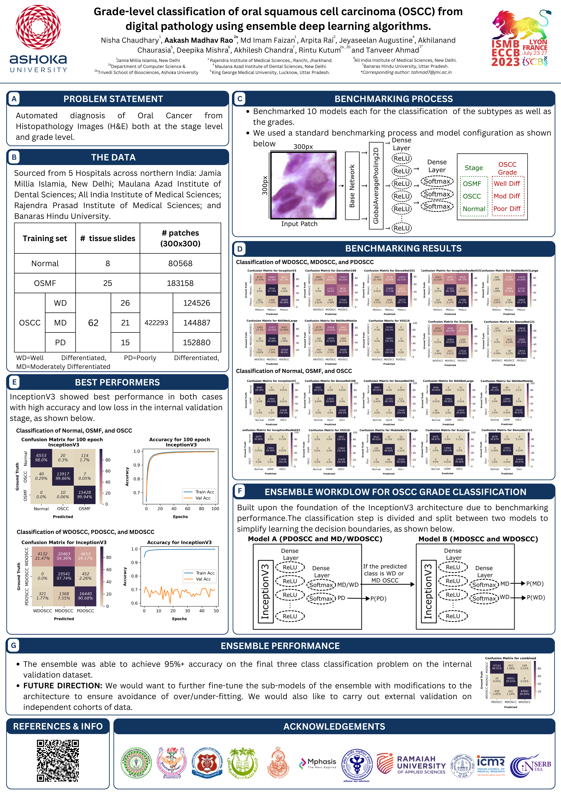

This work is still in progress and is scheduled to be completed later this year (2023). Watch this space for updates.
Authors
Nisha Chaudhary [1], Md Imam Faizan [1], Aakash Madhav Rao [3], Arpita Rai [2], Jeyaseelan Augustine [4], Akhilanand Chaurasia [5], Deepika Mishra [6], Akhilesh Chandra [7], Varnit Chauhan [1], Rintu Kutum [3,8], Tanveer Ahmad [1*]
Affiliations
- Multidisciplinary Centre for Advanced Research and Studies, Jamia Millia Islamia, New Delhi, India
- Rajendra Institute of Medical Sciences., Ranchi, Jharkhand, India
- Department of Computer Science, Ashoka University, Haryana, India
- Maulana Azad Institute of Dental Sciences, New Delhi, India
- King George Medical University, Lucknow, Uttar Pradesh, India
- All India Institute of Medical Sciences, New Delhi, India
- Banaras Hindu University, Uttar Pradesh, India
- Trivedi School of Biosciences, Ashoka University, Haryana, India
*. Corresponding Author
Abstract
Diagnosing oral diseases like oral submucous fibrosis (OSMF) and oral squamous cell carcinoma (OSCC) is a complex process that requires a trained eye to identify the subtle changes in the histological images of the epithelial and subepithelial regions. These changes are difficult to detect and often go unnoticed, making accurate diagnosis without the help of a histopathologist almost impossible. However, the shortage of histopathologists and their busy schedules can cause significant delays in getting a diagnosis and also lead to subjective assessments that may result in inaccurate diagnoses. This is due to the overlapping features between the different disease conditions, which can make it challenging for even experienced histopathologists to make a confident and accurate diagnosis. To overcome these limitations, we developed a deep learning framework that could classify normal, premalignant, and malignant stages and also differentiate between the three stages of malignant OSCC tissue (well, moderate, and poorly differentiated). The framework was trained and tested on internal datasets consisting of samples from diverse locations in the Indian subcontinent. The results were remarkable, with a validation accuracy of 97%, indicating the effectiveness of the ensemble-based learning approach in grading OSCC. In conclusion, we have shown the potential of using deep learning techniques in a clinical setting to diagnose oral diseases accurately and quickly, overcoming the limitations of traditional methods and improving patient outcomes.
My role
I built all the scripts for the benchmarking of various algorithms and also carried out the modelling of the ensemble.
License
This work has been licensed under the Creative Commons CC BY-NC 4.0 license.
Poster presented at ISMB/ECCB-2023:
